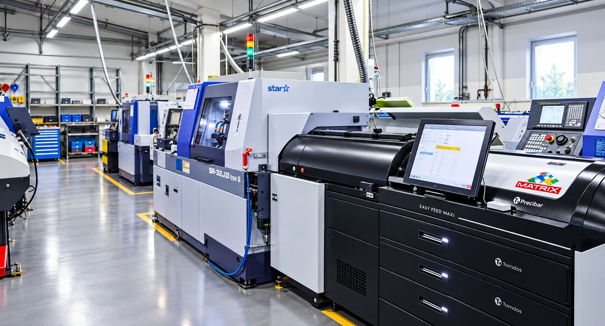
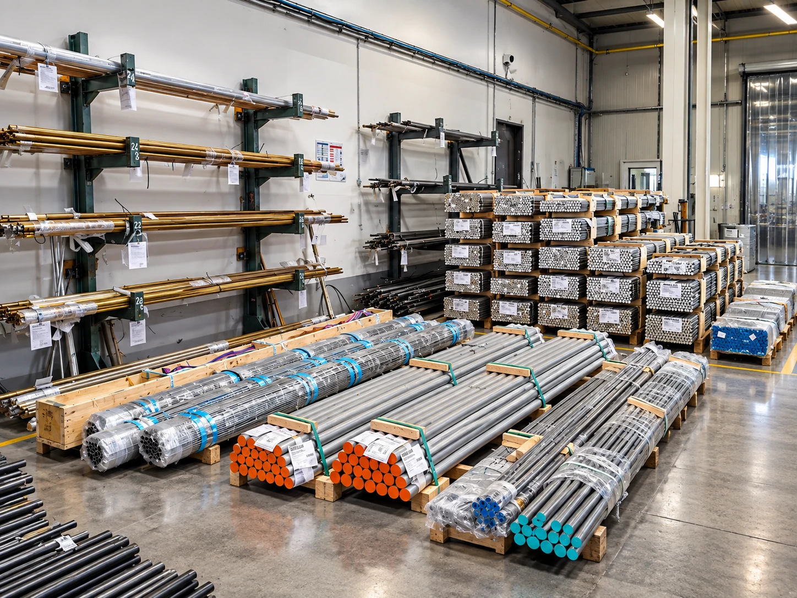

Hosszesztergálás rúdból
Ø 4–35 mm
- Munkadarab hossz
- max. 320 mm / befogás
- Gépek
- STAR SA/SB/SR, INDEX GS30
- Műveletek
- esztergálás, fúrás, menet, keresztfúrás, marás, hátoldali megmunkálás
Tevékenységek
Nagy pontosságú esztergált és mart alkatrészek alumíniumból, sárgarézből és műszaki műanyagokból, valamint alumínium- és sárgaréz-öntvények megmunkálása.


Technológia 01
Forgástest jellegű alkatrészek komplett megmunkálása CNC automata esztergákon és hosszesztergákon, rúdanyagból.
Így dolgozunk
Kövesse végig egy M20×1,5 menetes sárgaréz persely gyártását a nyers rúdtól a kész, ellenőrzött darabig. A szimulációt valódi CNC program vezérli – ugyanúgy, ahogy a gépeinken.

Húzza a forgatáshoz

Technológia 02
Prizmatikus alkatrészek marása, fúrása és menetkészítése vertikális megmunkálóközpontokon, Fanuc, Heidenhain és Mitsubishi vezérléssel.

Technológia 03
Alumínium- és sárgaréz-öntvények kész méretre munkálása sorozatban.
Technológia 04
Hagyományos gépeken történő fémmegmunkálás; egyedi, kis méretű, de bonyolult geometriájú alkatrészek.

Szolgáltatás 05
Közép- és nagysorozatú alkatrészgyártás 3 műszakban. Partnereink számára a teljes folyamatot biztosítjuk az alapanyag beszerzésétől a késztermék kiszállításáig.
Technológiai paraméterek
A jellemző megmunkálási tartományok gépparkunk alapján. A határértékek közelében lévő alkatrészeknél kérje egyedi ajánlatunkat.
Hosszesztergálás rúdból
Ø 4–35 mm
Tokmányos CNC esztergálás
Ø 630 mm
CNC marás
1350 × 750 mm
Gyárthatósági gyorsellenőrzés
Adja meg a befoglaló méreteket – azonnal mutatjuk, melyik technológiával és gépcsoporttal gyártható.
Anyagok
Fő profilunk a színesfém és műanyag alkatrészek gyártása. Az alapanyagot igény szerint mi szerezzük be.

Saját alapanyagraktár
Az alapanyag nálunk van – nem a beszerzésre várunk| Anyagcsoport | Kiinduló forma | Jellemző technológia |
|---|---|---|
| Alumíniumötvözetek | Rúd, profil | Esztergálás, marás |
| Sárgaréz | Rúd | Automata esztergálás, hosszesztergálás |
| Műszaki műanyagok | Rúd, lemez | Esztergálás, marás |
| Alumíniumöntvény | Öntött nyersdarab | Marás, fúrás, menetkészítés |
| Sárgaréz-öntvény | Öntött nyersdarab | Marás, esztergálás |
Együttműködés
Műszaki rajz (PDF), 3D modell (STEP), éves mennyiség és anyagminőség alapján.
Gyárthatóság, technológia és gépválasztás, átfutási idő.
Darabár, szerszám- és készülékköltség, szállítási feltételek.
Első minták gyártása és mérési jegyzőkönyv.
Ütemezett gyártás 3 műszakban, gyártásközi ellenőrzéssel.
Végellenőrzés, csomagolás és kiszállítás.
Ajánlatkérés